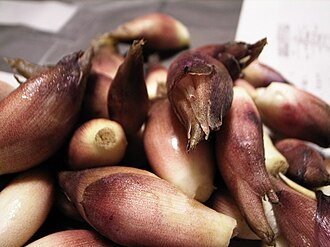

みょうがの生産量 都道府県ランキング
全17都道府県の順位と収穫量
みょうがの収穫量が全国で最も多いのは高知県で、4,420 tです。全国（4,580 t）の97%を占めます。

| 順位 | 都道府県 | 収穫量 | 全国に占める割合 |
|---|---|---|---|
| 1位 | 高知県 | 4,420 t | 97% |
| 2位 | 群馬県 | 49 t | 1.1% |
| 3位 | 奈良県 | 40 t | 0.9% |
| 4位 | 長野県 | 26 t | 0.6% |
| 5位 | 山形県 | 17 t | 0.4% |
| 6位 | 秋田県 | 10 t | 0.2% |
| 7位 | 鹿児島県 | 8 t | 0.2% |
| 8位 | 福島県 | 3 t | 0.1% |
| 9位 | 青森県 | 2 t | 0.0% |
| 10位 | 和歌山県 | 2 t | 0.0% |
| 11位 | 宮城県 | 1 t | 0.0% |
| 12位 | 神奈川県 | 1 t | 0.0% |
| 13位 | 新潟県 | 1 t | 0.0% |
| 14位 | 滋賀県 | 1 t | 0.0% |
| 15位 | 京都府 | 1 t | 0.0% |
| 16位 | 大阪府 | 1 t | 0.0% |
| 17位 | 大分県 | 1 t | 0.0% |
みょうがの生産量の推移（令和2年産〜令和6年産）
全国の収穫量は、令和2年産の5,440 tから令和6年産の4,580 tへ、16%減りました。期間中、1位は一貫して高知県です。
| 年 | 全国 | 1位 | 2位 | 3位 |
|---|---|---|---|---|
| 令和6年産 | 4,580 t | 高知県4,420 t | 群馬県49 t | 奈良県40 t |
| 令和4年産 | 4,860 t | 高知県4,610 t | 秋田県56 t | 群馬県54 t |
| 令和2年産 | 5,440 t | 高知県5,080 t | 奈良県101 t | 秋田県75 t |
この数字について
- 分類：ショウガ科
- 全国の収穫量：4,580 t
- この数字が表すもの：収穫量（収穫された重量）
- 調査：地域特産野菜生産状況調査 令和6年産
- 17県分を調査（調査していない県は順位に入りません）
みょうがの生産量について、よくある質問
- みょうがの生産量が日本一の都道府県はどこですか？
- 高知県です。地域特産野菜生産状況調査（令和6年産）で4,420 tでした。
- みょうがの生産量ランキング2位・3位はどこですか？
- 2位は群馬県（49 t）、3位は奈良県（40 t）です。
- みょうがの生産量ランキング4位・5位はどこですか？
- 4位は長野県（26 t）、5位は山形県（17 t）です。みょうがの全17県の順位は上の表のとおりです。
- みょうがの全国の生産量はどれくらいですか？
- 4,580 t（令和6年産）です。